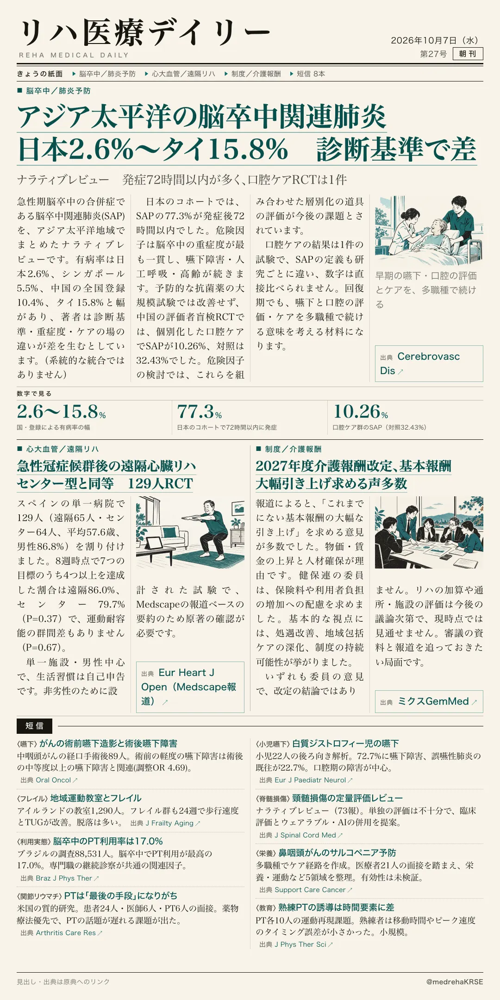
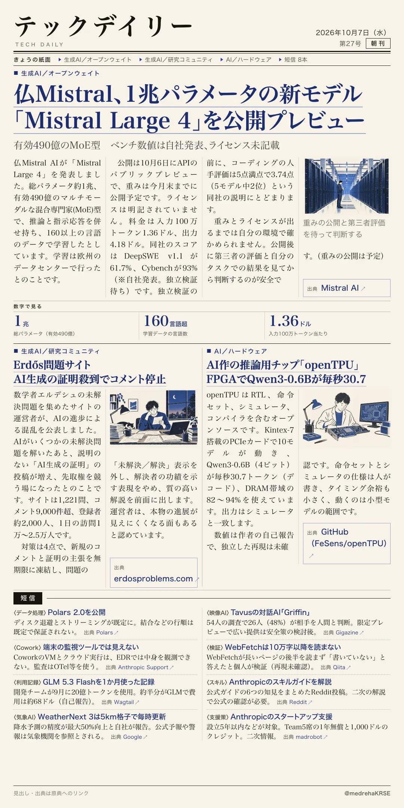

リハ医療デイリー
アジア太平洋の脳卒中関連肺炎 日本2.6%〜タイ15.8% 診断基準で差
ナラティブレビュー 発症72時間以内が多く、口腔ケアRCTは1件
急性期脳卒中の合併症である脳卒中関連肺炎(SAP)を、アジア太平洋地域でまとめたレビューです。

テックデイリー
仏Mistral、1兆パラメータの新モデル「Mistral Large 4」を公開プレビュー
有効490億のMoE型 ベンチ数値は自社発表、ライセンス未記載
仏Mistral AIが、推論と指示応答を併せ持つマルチモーダルな大規模モデルを発表しました。
